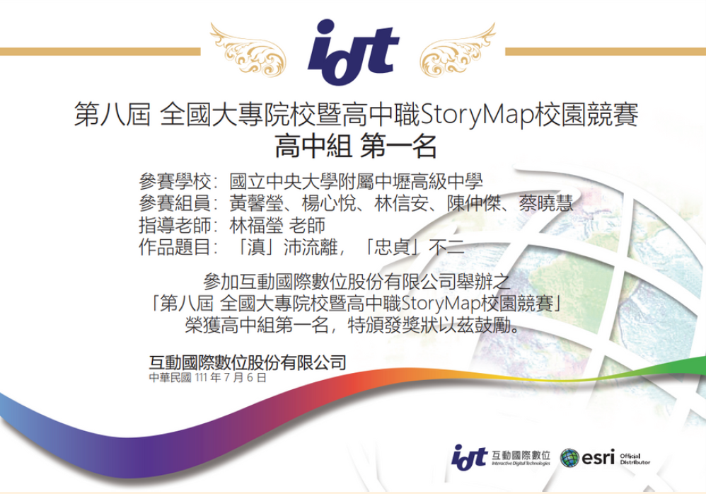
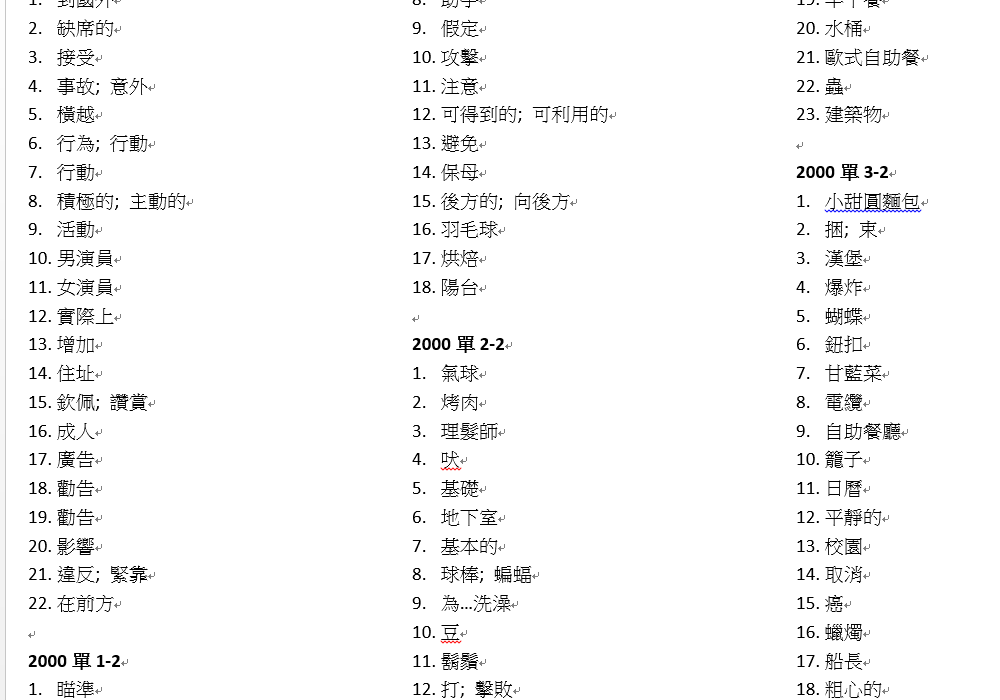
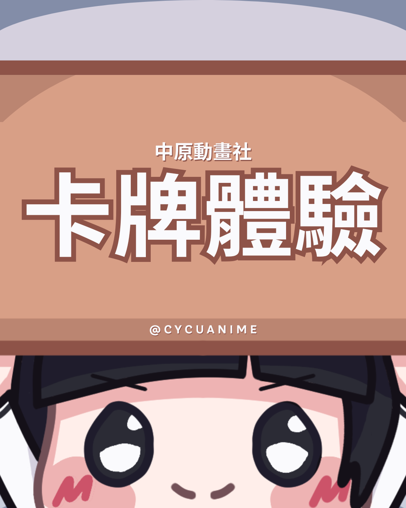

ME
Dainel Lin
林信安
關於我
中原大學 資訊管理系
生日: 2006/08/25
興趣: 程式, minecraft, 畫圖
個性: 還算隨和
享受寫程式的一個人類
(不包含不是程式的超文本標記語言)
slogan: html不是code!!!
關於更多相關的資訊及圖表顯示和經歷或聯絡方式，請點選下方的三個按鈕導向那個部分，或者直接向下滑動。
中原大學 資訊管理系
生日: 2006/08/25
興趣: 程式, minecraft, 畫圖
個性: 還算隨和
享受寫程式的一個人類
(不包含不是程式的超文本標記語言)
slogan: html不是code!!!
關於更多相關的資訊及圖表顯示和經歷或聯絡方式，請點選下方的三個按鈕導向那個部分，或者直接向下滑動。
| 擅長工具 | IntelliJ, Pycharm, VSCode, NotePad++, CSP |
|---|---|
| PowerPoint, Word, Excel | |
| 語言能力 | 英文：聽(優) 說(佳) 讀(優) 寫(佳) |
| 日文：聽(可) 說(略) 讀(可) 寫(略) | |
| 專業證照 | English, TOEIC, 920 全民英檢中級 |
| 學術獎項 | 全國大專院校暨高中職StoryMaps校園競賽 第一名 |
按鈕可切換顯示
高一那年參加了Storymap故事地圖高中職組的競賽，我的職責是製作地圖。接觸ArcGIS和Arcmap的過程中也養成了資料的結構觀念，也了解了團隊中的R&R，除了互相協助以外，執行自己被分配的工作，相互配合進行的模式也很不錯。
故事地圖競賽之獎狀
大一後我去爭取了個教英文的機會，主要是幫學生考試，教單字；撥放與檢討聽力閱讀的工作項目。站在台上時感覺自己就像個老師一樣，要用學生聽懂的方法也很有挑戰性，非常有成就感。
大二這一年我接了社團幹部：公關，主要負責製圖與擔任社員跟幹部間的窗口。不得不說，第一次當公關，當窗口的壓力還不小，尤其是對付社員的提問。目前才剛開始不到一個學期，希望這年順利下去。
手機：09-22623988